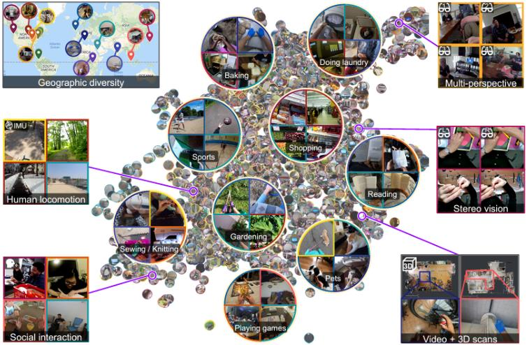
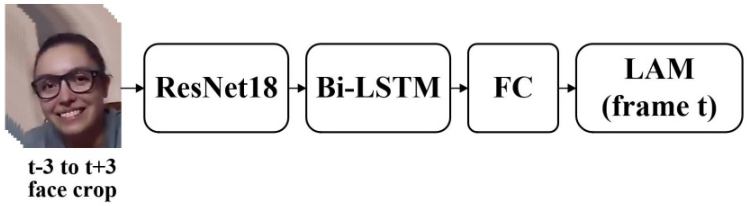
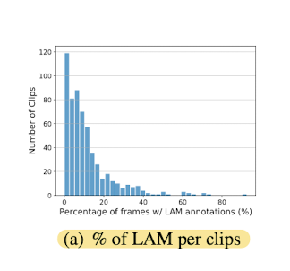
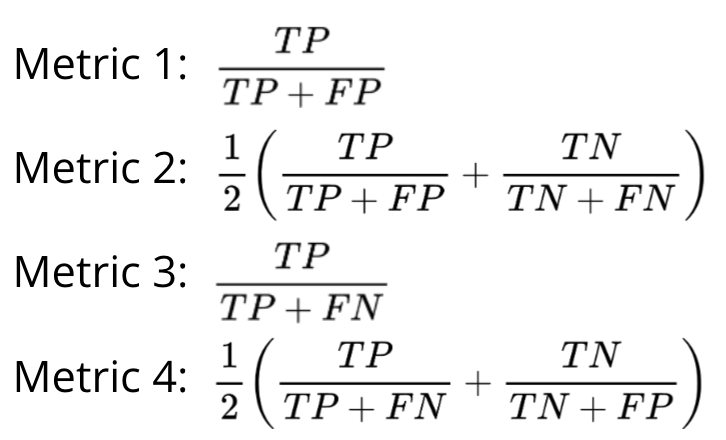
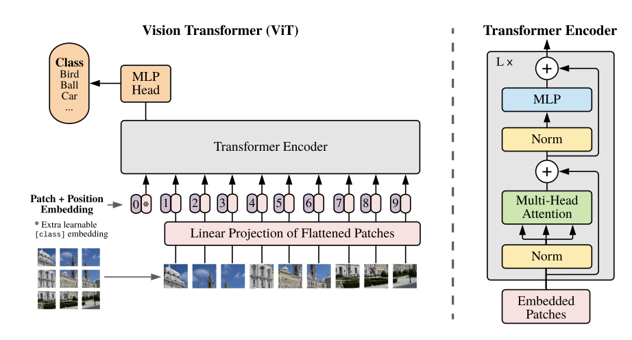
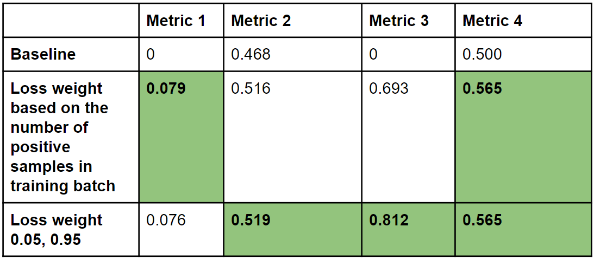
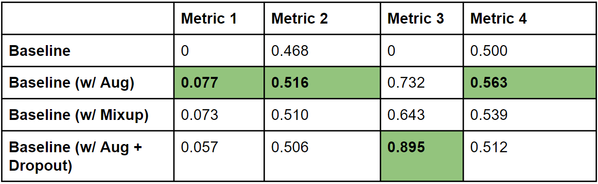
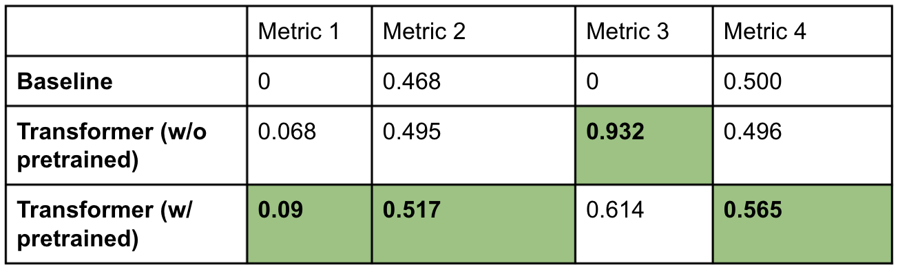

Social interaction Analysis on
Egocentric Videos
Resource
Project Page (https://guillermohan97.github.io/16824_vlr_project/)
Github repo (https://github.com/GuillermoHan97/16824_vlr_project)
Motivation
As the heat continues to grow for the "Metaverse" concept in both industry and academia, more and more people have started to focus on first-person visual perception. Egocentric videos, which are captured by a wearable camera in first-person perspective, have become the essential media for this new task. However, though egocentric videos can be viewed as a type of videos, they are more challenging compared with classical videos because they usually involve rapid scene change, object distortion and limited visual range. Thanks to the recently published massive-scale ego-video dataset Ego4D [1], large amount of diverse data with high-quality annotation become accessible. Moreover, as an extension to existing visual learning tasks such as video analysis, egocentric video analysis is playing an significant role in improving human-human or human-computer interaction. Therefore, we decide to set egocentric videos analysis as the main direction of our project, with a particular emphasis on social interaction track.
|  |
Figure 1. Example of egocentric videos of daily life activity [1].
Related Work
Video Analysis. As one of the most essential and important tasks in visual learning, video analysis distinguishes itself from previous image analysis task by its additional temporal dimension. This encourages many state-of-the-art methods in this field to put most efforts into improving temporal coherence without loss of 2D visual signal. For example,[3] proposes a novel architecture with a slow pathway to encode 2D visual information and a fast pathway to encode temporal information. [9] also introduces a two-stream 3D convolution network that is based on 2D convolution inflation, in order to capture both visual and temporal features. [4] presents non-local operations that are good at capturing long-range dependencies. All these methods from classical video analysis have turned out to be the building blocks for egocentric video analysis. Egocentric Video Analysis. Given the temporal nature of videos, many state-of-the-art methods targeted for egocentric videos such as [5,6,7] try to utilize attention mechanism [8] to capture the relationship across frames. The massive-scale egocentric video dataset Ego4D [1] also comes with a suite of benchmarks and baselines spanning many essential tasks of egocentric perception. More specifically, for the social interaction track that we aim to focus on, they have established a baseline with a ResNet-18[10] followed by a Bidirectional LSTM[11].
Baseline
We adopted one of the most famous Gaze360[12] in this area as our baseline model. Taking 7 frames (1 key current frame, 3 previous frames and 3 latter frames), the straight forward model consists of a CNN structure (ResNet-18) to extract the image feature and a Bi-LSTM structure to align the temporal features. We modified the output layer to a FC layer for classification task.
|  |
Figure 2. Gaze360[12] baseline.
Our Ideas
Data Imbalance Problem
By analyzing the data, we find out that we are facing an imbalance problem. Below is the figure of percentage of frames that has looking at me annotations. Over 95% of data is not looking at me|  |
Figure 3. Percentage of frames that has looking at me annotations [1].
Also we design different evaluation metrics. Since though baseline has high accuracy, it predicts all data as not looking at me These metrics can balance the accuracy contributed from different classes. We tried some basic data augmentation, mixup as well as dropout too. Different from the original mixup, we will mix with the looking at me class more frequently. And we adjust the loss weight based on the mixup result.
More Reasonable Metrics
According to our anaysis on this dataset, we notice that it is seriously imbalanced so even if the Baseline predicts ALL data as "not looking at me", it still achieves very high accuracy because most of the GT annotations are "not looking at me". Therefore, we proposed 4 more reasonable metrics, which can be viewed as "weighted accuracy" aiming to balance the accuracy contributed from different classes. All these metrics are shown in Figure 3.|  |
Figure 4. Percentage of frames that has looking at me annotations [1].
Transformer
Transformer is a novel deep learning architecture that adopts the self-attention mechanism, and trying to learn an adaptive weighting system to capture the significance of each part of the input data. In our task, it is especially helpful to focus on the gaze located around eye region, which can provide a useful clue for our model to learn "looking at me". Therefore, we decide to adapt a recently proposed technique named Vision Transformer [2] to our task. As a brief introduction, ViT will divide the input image into multiple patches and then for each patch it will extract a feature vector, and pass through the Transformer architecture, then followed by a MLP head to generate classification results. In our setting, the input image will become the face region of different persons interacting with camera wearer, and the output of MLP head will be a binary boolean label deciding whether the person is looking at me or not. Our experiment results proved that Transformer is good at attending to important regions for our task.|  |
Figure 5. Vision Transformer architecture [2].
Experimental Results
Weighted Loss Result
Both fixed weight or dynamic weight can improve the performance. The weight 0.05 is actually very close to the percentage of looking at me annotation in the data.|  |
Figure 6. Weighted loss results.
Data Augmentation and Dropout Result
|  |
Figure 7. Data augmentation results.
 |
Figure 8. Noisy data with unstable face bounding box.
For dropout, it is actually very unstable for the imbalance task
Transformer Result
|  |
Figure 9. Transformer results.
Conclusion
We selected the recently published dataset Ego4d which consists of egocentric videos and focused on the social interaction track, specifically the task of judging whether there are people looking at the camera at the current frame. Based on the Gaze360 baseline, we first analyzed the dataset itself, noticed the problem of extreme imbalance thus tried weighted loss and more reasonable metrics. Data augmentation was also performed to alleviate the data imbalance problem. Experimental results show that by adding weighted loss, using new metrics and performing data augmentation, there are significant performance improvements over the baseline. With the idea that for social interaction analysis, some regions such as eyes are more important than others so it would be a good idea to introduce attention mechanism. We used ViT structure in our model, which is supposed to focus on the eye area of each frame. The experimental results proved that our proposed model with ViT structure outperformed the baseline with a large gap no matter whether with or without pretraining.
Future Direction
Currently, the input for our Transformer structure is only the single key frame itself. As our goal is to detect eye contaction in video frames, sequential information is essential. Compared with baseline which takes as input 7 frames nearby, our transformer is good at focusing more on critical spatial information. It would be a promising direction to combine with LSTM-like mechanism to encode more temporal information.
Reference
[1] K. Grauman, et al. "Ego4d: Around the World in 3000 Hours of Egocentric Video." CVPR 2022.
[2] Alexey Dosovitskiy, et al. "An Image is worth 16x16 words: Transformers for image recognition at scale". ICLR 2021.
[3] C. Feichtenhofer, et al. "Slow-fast networks for video recognition". ICCV 2019.
[4] X. Wang, et al. "Non-local neural networks". CVPR 2018.
[5] J.-M. Perez-Rua, et al. "Knowing what, where and when to look: Efficient video action modeling with attention". arXiv 2020.
[6] F. Sener, et al. "Temporal aggregate representations for long term video understanding". arXiv 2020.
[7] X. Wang, et al. "Symbiotic attention with privileged information for egocentric action recognition". AAAI 2020.
[8] A. Vaswani, et al. "Attention is all you need". arXiv 2017.
[9] J. Carreira, et al. "Quo vadis, action recognition? a new model and the kinetics dataset". CVPR 2017.
[10] K. He, et al. "Deep residual learning for image recognition". CVPR 2016.
[11] S. Hochreiter, et al. "Long short-term memory". Neural Computation 1997.
[12] Petr Kellnhofer, et al. "Gaze360: Physically Unconstrained Gaze Estimation in the Wild". ICCV 2019